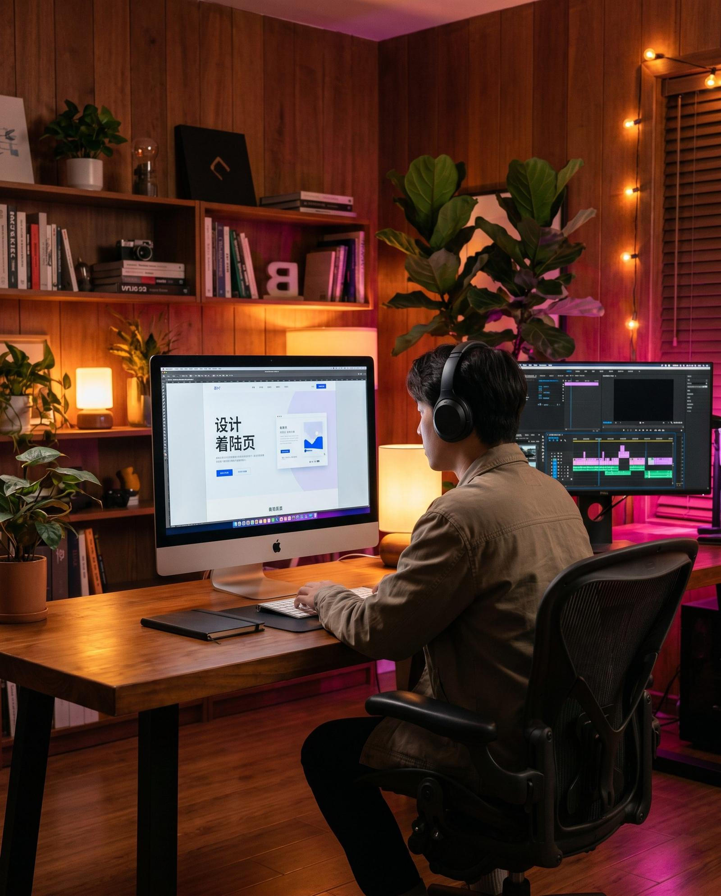

直帰されない「本物」の中国語クリエイティブを
既存ページの無料簡易ローカライズ診断、およびプロモーション動画の構成案・お見積もりを無料で作成いたします。

Core Competence
日本語のランディングページや動画を単純に自動翻訳しただけのクリエイティブは、現地のユーザーには極めて不自然で、ブランドへの不信感に繋がります。PROTECHは、中国特有の「派手さの中に信頼性を持たせるデザイン感」「トレンドを取り入れたキャッチコピー」「モバイルファーストの超高速コーディング」で、コンバージョンを跳ね上げます。
ネイティブ文脈ローカライズでのCVR向上値
高速CDN対応による平均ページ表示速度
モバイル（スマホ）経由の閲覧比率
ネイティブ専任ディレクター完全監修
Common Challenges
日本語のLPを機械翻訳・直訳しただけで公開しているため、中国ネイティブから見ると不自然で説得力に欠け、直帰されてしまう。
日本国内のサーバーにLPを配置している、または中国固有のWeb規制（グレートファイアウォール）に対応していないため、表示に何秒もかかって離脱される。
PR用・SNS動画を制作したいが、小紅書や抖音で実際に再生が伸びている動画構成（カット割り、文字演出、中国語ナレーション）のトレンドがわからない。
PROTECHがコピーライティング・映像設計から高速配信まで全面支援
中国市場の消費者インサイトを見抜く、高転換率なハイエンドクリエイティブをご提供
Our Services
中国マーケティングのコンバージョンボトルネックを解決する、4つの主要ソリューション。
中国ユーザーの視線誘導、競合比較情報の提示方法、意思決定ロジックを反映した完全ローカライズLPを設計。中国の検索エンジン（百度）インデックスに対応したSEO最適化と、中国国内での表示速度を限界まで高めた超高速サーバーコーディングを行います。
小紅書(RED)や抖音(Douyin)等の縦型ショート動画広告に特化した、バイラル（バズ）を生む動画制作。日本人クリエイティブディレクターによる品質管理のもと、現地の若者に最もアピールする音効、BGM、ナレーション、ネイティブ字幕を実装します。
WeChatや小紅書アプリ内でシームレスに立ち上がる、アニメーションやクイズ、診断コンテンツを搭載したインタラクティブWebページ（H5）を制作。高いバイラル性とSNS内での驚異的なシェア率（拡散）を実現します。
日本企業が展開するアプリやWebプラットフォームの中国市場向けローカライズUI/UXデザイン。また、百度広告、小紅書・抖音フィード広告、テンセント広告等、配信媒体のアルゴリズムやサイズ規定に完全準拠したA/Bテスト用バナーパックを制作します。
Production Process
PROTECHの制作プロセスは、ただ「言われたテキストを直訳して綺麗にデザインする」ことではありません。ターゲットとなる中国の消費者の具体的な人物像（ペルソナ）を浮き彫りにし、どのような言葉、色、映像カットが最も強い行動喚起を起こすかを設計してから制作に取り掛かります。
貴社製品・サービスの特徴、日本での強みをヒアリング。中国市場でどの競合と比較されるかを調査し、差別化の切り口を定義します。
成約に至る心理動線を計算した構成案を作成。ネイティブの現役コピーライターが、心理的価値を訴求する刺さるキャッチフレーズと構成テキストを執筆します。
中国トレンドを取り入れたモダンでインパクトのあるビジュアル制作。動画の場合は詳細な絵コンテを作成した上で、プロ仕様のカメラで撮影を行います。
モバイル環境で瞬時に読み込める軽量で美しいフロントエンド実装。中国国内からのアクセス表示速度検証を徹底して行った上で納品・公開します。
FAQ
はい、可能です。日本語の元ファイル（Figma, Adobe XD, Illustrator等）をご提供いただき、レイアウト構造を維持したまま、ネイティブ視点での自然かつ刺さるキャッチコピーへの置き換え、画像素材の差し替え、中国向けに最適化した軽量なHTML/CSSコーディングのみをご提供するプランもございます。まずはお気軽にお手元のLPのURLをお知らせください。
中国には「グレートファイアウォール（金盾）」と呼ばれる独自の通信遮断壁があるため、海外サーバー（日本国内サーバーを含む）からのアクセスは非常に遅くなります。PROTECHでは、中国の通信網に最適化された高速CDN（コンテンツ配信ネットワーク）の活用、中国国内での表示をブロックする要因となるGoogle FontsやYouTube埋め込みコード等の排除、アセット画像の徹底的な軽量化を実施することで、中国本土内での高速表示（0.8秒以下）を可能にしています。
はい、最も得意とする手法の一つです。PROTECHの日本人映像撮影チームが貴社の国内施設・店舗（東京都内など）に直接お伺いして高解像度なシズル動画を撮影。その撮影素材をもとに、中国のSNS（小紅書・抖音）で流行している縦動画のカット割りや、ネイティブのプロの音声ナレーターによる語り、現地で今最もバズっているエフェクト字幕をネイティブクリエイターチームが編集・実装します。
はい、当社のLPコーディングは百度（Baidu）のクローラーが巡回しやすく、インデックス登録されやすい仕様に準拠しています。metaタグの設計、titleタグの階層化、高速表示対応など、現地の主要検索エンジンのインバウンドSEOルールに合致した技術的対策を標準で網羅しております。
既存ページの無料簡易ローカライズ診断、およびプロモーション動画の構成案・お見積もりを無料で作成いたします。